- Index
 ImageMagick Examples Preface and Index
ImageMagick Examples Preface and Index
 Crop (cutting up images in a free form way)
Crop (cutting up images in a free form way)
- Adding/Removing Image Edges
- Adding/Removing Rows, Columns and Edges
- Advanced Cropping Techniques
- Trim, the 'Auto-Crop' Operator
Here we explore the ImageMagick operations which allow you to put your images
under the knife, and add frames and borders around the image. That is we look
at operations which Changes an image's size, without scaling the image
content.
You may think this is a simple operation and it is. So simple, that IM
provides a huge number of ways and methods of actually doing this task. So
many that I needed to give it its own page of examples just to demonstrate
them all.
Crop (cutting images down to size)
Crop and Canvas Page
The "
-crop" image operator
will simply cut out the part of all the images in the current sequence at the
size and position you specify by its geometry argument.
convert rose: rose.gif
convert rose: -crop 40x30+10+10 crop.gif
convert rose: -crop 40x30+40+30 crop_br.gif
convert rose: -crop 40x30-10-10 crop_tl.gif
convert rose: -crop 90x60-10-10 crop_all.gif
convert rose: -crop 40x30+90+60 crop_miss.gif
|
![[IM Output]](rose.gif)

![[IM Output]](crop.gif)
![[IM Output]](crop_all.gif)
![[IM Output]](crop_miss.gif)
Just so you can check on exactly what happened here is output from
"
identify" on the results of the crop above.
identify rose: crop.gif crop_br.gif crop_tl.gif \
crop_all.gif crop_miss.gif
|
Notice that the size of the displayed image (its
Virtual Canvas) has not been effected by
the "
-crop" operation.
The actual image itself has been cropped, and may be smaller, but the canvas
on which the GIF image is displayed is still the same size as the original
canvas.
You will also notice that the size of the actual image produces may not be the
actual size you requested from the crop. It could be very much smaller that
what you expected, as the crop itself was either partially or fully outside
the actual image area being cropped.
You will also notice that the 'offset' of the image on the
Virtual Canvas was in many cases also
changed so that the pixels of cropped image is still in exactly the same
position as they were in the original image. That is the image contents itself
does not move, even though the actual image itself is smaller.
This means if you now modify the smaller image, then overlay the image (using
image layering operators back over the
original, it will fit back exactly where the sub-image originally came from.
That is IM retains the 'virtual canvas', 'page', or 'layering' information of
the image so as to preserve it for later use. This is especially important
for the correct working for GIF animation handling. For more information on
this see.
Deconstruct GIF
Animations.
  |
GIF images make active use of the 'page' or 'virtual canvas', size and
offset information in images cropped by IM. If you don't want this
information remove it with "+repage" immediately after the "-crop".
Note that many image formats don't save this virtual page/canvas
information information, so saving to such formats automatically removes
it. JPEG is a typical example of a format that removes this info.
The PNG format doesn't make much use of page/canvas info (except in the
multi-png (MNG) format) but it does saves the page offset information
(even negative offsets). IM will also add a small amount of meta-data to
preserve the virtual canvas size for later use by other IM commands.
Because of this preservation, I strongly recommend you still apply a
"+repage" even when
saving to JPEG or other page-less image format when you will not need that
information, as a pre-caution, and to make it obvious you don't what it.
|
The Missed Image (from a bad crop)
The last image in the above example (EG: "
crop_miss.gif") also
produced special empty image. Such images can be produced by operations such
as
Crop,
Trim,
Layer Comparison, and even
GIF Animation Optimizations, that generate
empty or non-sensible results.
For example in the previous example above, the "
-crop" operation missed the actual
image it was cropping, so it produced this special 'missed' image, as well as
some informational warning messages...
The output image, or 'missed' image, is a minimal image, one pixel in size at
a 0 offset, but with original images page or canvas size, as well as any other
meta-data the image may have associated. Here it represents the 'empty' or
'zero sized' image that should have been returned by "
-crop", but as no image format can
output an image of 'zero' dimensions, a single transparent pixel image is used
instead.
Just so you can see more clearly, here is the "
identify" output of the missed image,
as well as a 'IM pixel enumeration' of that single pixel image, showing that
it only contains one single transparent pixel.
convert crop_miss.gif crop_miss_data.txt
|
This 'missed' image is basically same as creating a "
null:" image but with the original source
images page or virtual canvas size set (but not its offset), and all other
image meta-data, such as GIF animation timing delays. The GIF disposal method
however may be modified to ensure animations remain correct, after cropping.
Basically you need to keep in mind that "
-crop" and other similarly related
operators can produce a special 'missed' image. As such you should plan to
look for the warning message, or this special 'Missed Image' when writing a
script using IM, if such a minimal image is possible and can cause you
problems.
If you don't want the warning message (for example you expect and handle, the
occasionally 'missed' image), you can add a "
-quiet"
Operational Control Setting to the command
line. This tells IM to not output informational warning messages, only real
errors.
At this time there is no method to remove any 'missed', or "
null:" images from the current image
sequence. However such a method has been proposed for a future release of IM.
Mail me if you find you need such a method.
Crop an image with existing Virtual Canvas
If an image already has an existing
Virtual Canvas, (for example a frame of a GIF animation), then the
"
-crop" operation will be
applied relative to the virtual canvas, and NOT to the actual image.
That is it will try to preserve the offset of the actual pixel data of the
cropped image on the canvas. That is a specific pixel before the crop should
still be located at the same offset relative to the virtual canvas afterward.
In this way cropping of layered images, or GIF animations will continue to
work right, even though the 'canvas' itself was not cropped.
Here we create an image centered on a page canvas, and we crop it in various
ways. As before the canvas size itself is not modified by the operation.
convert rose: -shave 12x0 -repage 64x64+9+9 paged.gif
convert paged.gif -crop 32x32+16+16 crop_page.gif
convert paged.gif -crop 32x32+0+0 crop_page_tl.gif
convert paged.gif -crop 32x32+32+32 crop_page_br.gif
convert paged.gif -crop 60x60+2+2 crop_page_all.gif
convert paged.gif -quiet -crop 32x32+56+56 crop_page_miss.gif
identify paged.gif crop_page.gif crop_page_tl.gif crop_page_br.gif \
crop_page_all.gif crop_page_miss.gif
|
![[IM Output]](paged.gif)
![[IM Output]](crop_page.gif)
![[IM Output]](crop_page_tl.gif)
![[IM Output]](crop_page_br.gif)
![[IM Output]](crop_page_all.gif)
That last example in the above was of course, the special
Missed Image. Note that I suppressed the normal
warning message from IM using a "
-quiet" setting.
Just so you can see just what is going on, lets have a closer look at the
paged crop of the lower right corner of the image. Here I have drawn a
semi-transparent square over the area that was cropped.
convert paged.gif -page 64x64+32+32 -size 32x32 xc:'#fff8' \
-matte -background none -mosaic crop_area_br.png
|
![[IM Output]](crop_area_br.png)
From this you can see just what is happening. Even though the crop is
contained completely in the page canvas, the crop did not cover the actual
image completely. The result is that the actual image is smaller than the user
may have intended, but still positioned on a larger canvas or page.
Removing Virtual Canvas from Results
If this
Virtual Canvas information is
not wanted, then you can use the special "
+repage" operator to reset the
page canvas and position to match the actual cropped image.
convert rose: -crop 40x30+10+10 +repage repage.gif
convert rose: -crop 40x30+40+30 +repage repage_br.gif
convert rose: -crop 40x30-10-10 +repage repage_tl.gif
convert rose: -crop 90x60-10-10 +repage repage_all.gif
convert rose: -quiet -crop 40x30+90+60 +repage repage_miss.gif
|
![[IM Output]](repage_br.gif) 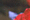
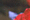
![[IM Output]](repage_all.gif)
![[IM Output]](repage_miss.gif)
This is of course the result new users of IM would normally have expected from
the "
-crop" operator. It
is actually such a common thing to do that you could call it a rule of thumb.
Always use "+repage" after any 'crop' like operation.
Unless you actually need to preserve that info.
The last image in the above is of course the special
crop missed image, but I supressed the warning message using the
"
-quiet" operational
setting.
 |
For IM version 5 and earlier the "+repage" operation was handled
by a "-page +0+0" argument sequence, usually just before saving
to format that uses virtual canvas and offset information, such as GIF. But
that was only usable when either reading or writing the image to a file,
preventing its use between multiple image processing operations.
With IM version 6, command line
restructure, the "-page" option became purely an image read/create setting for
use in creating GIF animations and
Layers of Images. As such separate
"-repage" and "-set page" operators were added to allow users to set or change
the virtual canvas information.
|
Viewport Cropping with Virtual Canvas
Adjustments
From ImageMagick version 6.2.4-5, you can add a new special flag to the
"
-crop" argument. This
flag '
!' will tell crop to adjust the
Virtual Canvas information of the
returned image so that it is relative to the area cropped.
In other words, regardless of the resulting size of the actual image cropped,
the canvas and offset of the image returned will be adjusted to match the area
you requested cropped. You can think of this flag as cropping an image to
match a 'window' or 'viewport' of the crop area. Even if half the image is
not visible in that 'window', the virtual canvas and offset of the part
returned will match that 'viewport'.
For example...
convert rose: -crop 40x30+10+10\! crop_vp.gif
convert rose: -crop 40x30+40+30\! crop_vp_br.gif
convert rose: -crop 40x30-10-10\! crop_vp_tl.gif
convert rose: -crop 90x60-10-10\! crop_vp_all.gif
convert rose: -quiet -crop 40x30+90+60\! crop_vp_miss.gif
identify rose.gif crop_vp.gif crop_vp_br.gif crop_vp_tl.gif \
crop_vp_all.gif crop_vp_miss.gif
|
![[IM Output]](crop_vp.gif)
![[IM Output]](crop_vp_all.gif)
|
The '!' character has special significance to some UNIX
shells, like "csh", and must be escaped with a backslash,
even when placed inside quotes.
|
Notice how the canvas size of the image returned now matches the area in which
the image was cropped.
For crops of images that are completely within the actual image, the result
will be equivalent to following the crop with a "
+repage". However any partial or
missed cropping of the image, the result will a larger canvas and a possible
offset to the resulting image. As such this is no substitute for doing a
"
+repage" after cropping
to reset page/canvas information.
However you can follow a 'viewport crop' with a
Flatten to 'fill out' the images new virtual canvas with real pixels.
That is you will be left with an image that is guaranteed to be the size of the
requested crop, with any 'missed' areas filled out with the current "
-background" color 'viewport'.
For example when Padding out an Image.
convert rose: -crop 100x100-15-25\! -background skyblue -flatten \
crop_viewport.gif
| |
![[IM Output]](crop_viewport.gif)
|
Flattening an image after a viewport crop is actually equivalent to using the
Extent Operator (see below), to provide a 'padded
crop'.
A 'viewport crop' flag is also very important when cropping GIF animations, as
it not only adjusts the canvas size, but also insures all the image frames are
still correctly positioned within the cropped area. Without this option
cropping a GIF animation is very difficult requiring external correction of
the image canvas size and offsets. For and example of this, see
Animation Crop, with the canvas too.
In many ways a 'viewport crop' is closely related to the special
Viewport Distort Setting in that
both act is if they are a 'window' into the resulting image. Both can be used
as a 'cropping' method.
|
The '!' flag can NOT be used when generating multi-image
Tiled crops, or with equal-area tile cropping,
where it has a different meaning. See the appropriate sections below.
|
Crop relative to Gravity
The offset position of the "
-crop" by default is relative to the top-left corner of the image.
However by setting the "
-gravity" setting, you can tell "
-crop" to cut the image relative to
either the center, corner, or an edge of the image.
The most common use of a gravitated crop, is to crop the '
center'
of an image.
convert rose: -gravity Center -crop 32x32+0+0 +repage crop_center.gif
| |
|
The "
-gravity" setting
does not just effect the initial 'zero' position of the crop but it also
effects the direction of the crop offset.
For example if you use a "
-gravity" of '
South', and offset of
'
+0+5' will offset the crop area upward, instead of downward as
it normally would.
convert rose: -gravity South -crop 20x20+0+5 crop_south.gif
| |
![[IM Output]](crop_south.gif)
|
Note the position of the crop example above. I purposely left off the
"
+repage" operation so you
can see how the crop area was displaced from the bottom edge of the image.
Also notice that the crop area is not only relative to bottom (southern) edge,
but that the area is center 'justified' to be middle of the bottom edge. This
is done with all gravity effected operations.
Crop a Percentage of an Image
The "
-crop" operator also
understands how to crop an image to just a percentage of its original size.
For example this will half the size of the image.
convert rose: -crop 50%x+0+0 crop_half.gif
| |
![[IM Output]](crop_half.gif)
|
|
If only one size number is given, then that value is used for both the width
and height percentages and the final size of the area that is being cropped
will be rounded to nearest integer. The offset is not optional.
|
Note that while the size can be a percentage the offset will always be in
pixels. You can not provide an offset as a percentage of the image size.
convert rose: -crop 50%x+30+20 crop_percent.gif
| |
![[IM Output]](crop_percent.gif)
|
|
When a crop is given with an offset you must supply an
'x' symbol in the argument so that the argument can be
interpreted correctly. This is especially important when only a single
number is provided for both width and height of the crop area.
As such you can not use an argument like '50%+30+20 which
is an error, and will result in crop silently doing nothing.
|
More commonly a percentage crop is done from the center of an image.
convert rose: -gravity Center -crop 50x80%+0+0 crop_percent_center.gif
| |
![[IM Output]](crop_percent_center.gif)
|
|
The percentage symbol '%' can appear anywhere in an argument,
and if given will refer to both width and height numbers. It is a flag
that just declares that the 'image size' parts are a percentage fraction
of the images virtual canvas or page size. Offsets are always given in
pixels.
|
You can also use a 'viewport crop' flag with percentage crops, to
automatically set the canvas size and offset of the crop, to the area being
cropped.
convert rose: -gravity Center -crop 50%\! crop_percent_vp.gif
| |
|
|
You can not use percent sizes for tile cropping (see next). As such if the
offset is not provided, and a percent size is given (as above) an offset of
+0+0 is assumed.
|
The '
!' flag means a "
+repage" is not needed. Caution however is still recommended, for
input images that may also have virtual canvas size and offsets.
Tile Cropping, sub-dividing one image into multiple images
One of the more useful aspects of crop is when you don't give a specific
position to the crop command. That is you give a size, and not a position
within the image to crop. In this case instead of generating just one image,
crop generates a whole series of images..
convert rose: -shave 12x0 -repage 64x64+9+9 paged.gif
convert paged.gif +gravity -crop 32x32 tiles_%d.gif
identify paged.gif tiles_?.gif
|
![[IM Output]](tiles_0.gif)
![[IM Output]](tiles_2.gif)
![[IM Output]](tiles_3.gif)
If you just want to extract a specific number of tiles from an image have a look
at
Cropping into roughly Equally Sized Divisions
below.
|
It is a good idea to make sure gravity is turned off using "+gravity". This is because in
one special case (centered percentage crop) the gravity setting can turn
off tile cropping. Other effects of gravity on tiled cropping is also
undefined.
|
By using "
-mosaic" or
"
-flatten" image
layering operators, (see
Layer Flatten) you
can layer these images all on top of each other, restoring the original image.
convert tiles_[0-3].gif -background white -mosaic tiles_mosaic.gif
| |
![[IM Output]](tiles_mosaic.gif)
|
However as you can see the virtual canvas of the image has been filled with
the background color by "
-mosaic".
An alternative is to use "
-layers merge" (see
Layer Merge),
which merges the multiple layer images into a new layer image just large
enough to hold all the given images. That is the virtual canvas is not filled
in, as "
-mosaic" or
"
-flatten" layering
methods would.
convert tiles_[0-3].gif -background none -layers merge tiles_layered.gif
identify tiles_layered.gif
| |
![[IM Output]](tiles_layered.gif)
|
|
| |
If you had reset the the canvas and offset information using "
+repage" then the images no
longer contain the offset from where they were cropped, nor the original size
of the source image. In that case you can re-join all the images together
again using the special '
concatenation' mode of
"
montage". You will need to tell montage how many rows or columns
of images were extracted from the original image.
convert rose: -crop 20x20 +repage +adjoin rose_tiles_%02d.gif
montage -mode concatenate -tile 4x rose_tiles_*.gif rose_rejoined.gif
|
Note that the names of the individual images is from
"
rose_tiles_00.gif" to "
rose_tiles_11.gif", which
simply the sequence number of the tiles in memory. This is not very nice as
the filenames give no easy indication of the actual position each tile belongs
to, or the total number of tiles per row and column.
As of IM v6.4.8-4 you can also use special
Filename Percent Escapes to generate and include special labels into the
output filename. Using this with
FX
Percent Escapes you can calculate a different 'tile position' for each
image. For example...
convert rose: -crop 20x20 \
-set filename:tile "%[fx:page.x/20+1]_%[fx:page.y/20+1]" \
+repage +adjoin "rose_tile_%[filename:tile].gif"
|
Will generate the tile image filenames "
rose_tile_1_1.gif" to
"
rose_tile_4_3.gif", which is a much better file naming scheme.
Tricky but it does work.
Unfortunately you can not format the number generated by a
Percent Escapes, to include padding
with zeros or specify an exact number of floating point digits. At least not
at this time.
Centered Tile Cropping
In a
IM Forum Discussion a request
was made to center the tile cropping so as to distributed he 'remainder
images' evenly around the edges. By doing this we maximize the effect of the
complete tiles by placing them in the center of the image. Of course you also
end up with more incomplete edge tiles.
The solution was to center the input image on a virtual canvas, that was some
multiple of the tile size wanted.
For example to tile crop the "
rose:" image (
70x46
pixels in size) into the maximum number of full
30x20 tiles, in
the center of the image (and surrounded by reminder tiles) you would do the
following.
- First calculate the number of full tiles you can get from the image
by dividing the image sizes...
70x46 / 30x20 => 2x2 full tiles + remainder
- Now add 2 more rows and columns to hold the remainder images (if needed)
2x2 + 2x2 => 4x4 tile images
- Multiply the tile size by this to get the virtual canvas size.
30x20 * 4x4 => 120x80 canvas size
- Subtract the original image size and divide into two for the centering
offset.
( 120x80 - 70x46 ) / 2 => +25+17
So the virtual canvas and centering offset is
120x80+25+17.
And here we use the above calculations perform a Centered Tile Crop...
convert rose: -repage 120x80+25+17 -crop 30x20 +repage rose_30x20_%02d.gif
|
If you want to preserve the original offset location of the tiles, but remove
the centering offset, you can do a relative offset adjustment using
"-repage -25-17\!" (replacing the "
+repage" in the above).
If you did not add two columns and rows to the number of tiles and thus
generate a negative offset you can effectively ignore the remainder edge
tiles, and only output full and complete tiles that exist in the image.
convert rose: -repage 60x40-5-3 -crop 30x20 +repage rose_ctiles_%d.gif
|
Basically as the remainders are now 'outside' the calculated virtual canvas
the "
-crop" operator does
not know they were there and ignores them.
Again replacing the "
+repage" in the above, with a relative offset adjustment using the
negated offset values
"-repage +5+3\!" will restore
the original offset locations from which the tiles were cropped.
An alternative for a centered tile crop and ignoring reminders is to simply
replace the virtual canvas setting with an appropriate crop.
convert rose: -gravity center -crop 60x40+0+0 +gravity +repage \
-crop 30x20 +repage rose_ctiles2_%d.gif
|
The above is easier to understand, but is also a little slower, as you are now
performing two crops. However less calculations are needed.
But if you want to recover the original tile offsets, you will still need to
calculate the relative offset you needed, in which case you may as well do the
task by the former faster method using the images virtual canvas.
Strip Cropping, cropping out rows and columns
With IM version 6.1.1, a "
-crop" was enhanced so that if one of the size arguments missing,
or set to zero, then the missing size argument is set to the size of the image
canvas/page. In most cases this is large enough to cover the image located on
the canvas,
if the related offset is also set to zero.
This small change allows you to easily cut out a single row or column from
the image, without needing a huge number like '
999999' to cover
the size of image.
For example, here we extract a simple row and column from our 'paged' rose
image.
convert rose: -shave 12x0 -repage 64x64+9+9 paged.gif
convert paged.gif -crop 20x0+30+0 strip_column.gif
convert paged.gif -crop 0x20+0+30 strip_row.gif
identify paged.gif strip_column.gif strip_row.gif
|
If you remove both offsets as well as one size argument, you can divide the
image into a series of strips or columns, instead of tiles.
convert rose: -crop 40x30+10+10 crop.gif
convert crop.gif -quiet -crop 20x strips_%d.gif
identify crop.gif strips_?.gif
|
![[IM Output]](strips_0.gif)
![[IM Output]](strips_1.gif)
![[IM Output]](strips_2.gif)
![[IM Output]](strips_3.gif)
Notice that tile cropping, strip or otherwise, is across the whole page canvas
of the image, and as such is aligned to that canvas, and NOT just the actual
image. This is why the first and last actual image generated in the above
example is only 10 pixels wide.
Of course if a specific tile, or in this case 'column' misses the actual image
on the virtual canvas (such as the last image in the above), then a
crop missed image is generated.
The warning that IM would have normally produced was suppressed using
a "
-quiet" setting. This
is not recommended unless you are expecting such an event, and are prepared
for it, such as in a script.
 |
It is possible for an image to be positioned such that it does not even
appear on its own page or virtual canvas, or be so large that the page
canvas can only contain a small window or part of the image.
In such rare cases, strip cropping without any size arguments will get the
image sub-division wrong, and produce respectively, missed images, or smaller tiles of only the parts within the virtual
canvas bounds.
The "-crop" operator
however will not be fixed to handle these rare special cases, as doing so
will prevent its use in other cases, such as those exampled below.
If this is a problem for you, sanitize the page offsets of the image before
cropping by using "+repage" to remove the virtual canvas before attempting to
generate the tile images.
|
As an alternative way of dividing images into separate rows, look at the
special script "
divide_vert". This program will let you divide up an image
according to horizontal 'gaps' of solid single color. For example, if given
an image of simple text, it will divide it into alternating images of 'lines'
and 'gaps'. A simple option lets you remove those gaps.
Quadrants, cutting around a single point
As any of the crop size numbers are missing then they are replaced with the
size of the image canvas of the image you are cropping. This should in most
cases result in the whole of the image in that dimension becoming part of the
crop result.
This allows, with cautious use of the arguments, is the ability to crop and
image into quarters around a specific point (with that specific pixel placed
as the top-right pixel of the bottom-left quadrant image). You do not need to
know how big the image is to do this.
For example here I crop the image into quadrants around the point 30,40
convert rose: -shave 12x0 -repage 64x64+9+9 paged.gif
convert paged.gif -crop 30x40+0+0 quadrant_tl.gif
convert paged.gif -crop 0x40+30+0 quadrant_tr.gif
convert paged.gif -crop 30x0+0+40 quadrant_bl.gif
convert paged.gif -crop +30+40 quadrant_br.gif
|
![[IM Output]](quadrant_bl.gif)
Of course if the point you were cropping around missed the actual image, then
two or even three of the resulting quadrant images will be the special
crop missed error images.
Using Negative Offsets, remove bottom or left edge
Their is no reason that you can not use a negative offset with "
-crop". In fact at times it can
have very definite benefits.
For example lets take our paged rose image and progressively crop it
with larger negative offsets. We will not supply an image size to "
-crop" argument, so it will default
to the images canvas size.
convert rose: -shave 12x0 -repage 64x64+9+9 paged.gif
convert paged.gif -crop -10-10 neg_offset_1.gif
convert paged.gif -crop -20-20 neg_offset_2.gif
convert paged.gif -crop -30-30 neg_offset_3.gif
convert paged.gif -crop -40-40 neg_offset_4.gif
convert paged.gif -crop -50-50 neg_offset_5.gif
|
![[IM Output]](neg_offset_1.gif)
![[IM Output]](neg_offset_3.gif)
![[IM Output]](neg_offset_5.gif)
As you can see steadily decreasing the offset to a larger negative value
slowly results in the bottom and right edges being 'chopped' off, the last
example almost missing the actual image. If we took this one step further a
Missed Image will be generated. It's a bit like
using a "
-chop" operator but
without a "
-gravity"
setting. See
Chop, Removing Edges.
Of course by using "
-crop"
you may need to use a "
+repage" operator to adjust the canvas/page information, where a
"
-chop" automatically
performs such an adjustment. That's life.
Cropping into roughly Equally Sized Divisions
The biggest problem with
Tile Cropping is that you
can only define the final size of each tile. This works great when the image
size is an exact multiple of the desired tile size, but as you have seen if
this is not the case you can end up with 'short' tiles on the right and bottom
edges.
For example lets again divide the built in rose image, but try to divide it
into 3x3 tiles. The original image is 70x46 pixels so divided by 3 make each
tile 23x15 pixels...
convert rose: -crop 23x15 +repage +adjoin rose_23x15_%02d.gif
|
Well as you can see this did not work, because the rose image can not be
exactly divided into 3 equally sized tiles. In this case you end up with
a 1 pixel 'short' tile. Even if you expand the size of the tile to 24x16
pixels, you will still end up with a tile that is 2 pixels 'shorter' than the
other tiles.
This situation gets worse as the number of tiles wanted gets larger.
For example try sub-dividing a length of 100 into 30 tiles. It is
impossible. You either use a length of 3 and get 34 tiles, or 4 and get
25 tiles. Getting exactly 30 equal sized tiles is impossible!
As of IM v6.5.8-9 you can now add the special '
@' flag to the
"
-crop" argument. This
flag tells the "
-crop"
operator to try its best to equally divide the image into the
number of
tiles given. For example...
convert rose: -crop 3x3@ +repage +adjoin rose_3x3@_%d.gif
|
The result is that the image was divided into tiles which have slightly
different sizes. However the tile size will differ by 1 pixel at the most!
Check it out!
As a bonus, you can also sub-divide the image so that each tile will
'overlap' its neighbours. You do this by not only using a '
@'
flag but also specifying the number of pixels of overlap you want.
For example lets divide the rose into quarters but with a 20 pixel overlap.
convert rose: -crop 2x2+20+20@ +repage +adjoin rose_2x2+20+20@_%d.gif
|
Again all the pieces will only differ in size by one pixel at the most! Though
in this case the resulting images are the same size, as the rose can divide by
2, equally. That however would not be the case if the overlap or the image was
an odd number in size. In that case the bigger element will be along the top
and left edge. With three tiles however the bigger (or smaller) element will
be placed in the middle!
You can even use a negative overlap to 'skip' exactly that many pixels between
tiles! Exactly how you should apply the operator depends on exactly what
pixels you want to 'overlap', or 'skip'. And that depends on the 'edge'
characteristics of the image (see
Separating
Spaced-out Tiling Images below).
As with any use of the "
-crop" operator, it is recommended you use a "
+repage to remove the 'page'
offset if it is not wanted. But the cropped image offset information can be
very useful, which is why it is preserved. You can for example use it to name
the output files, or find out the size and locations of the tiles that IM
calculated.
Note that equal sized tile cropping, is the only situation in which the
"
-crop" operator ignores
the actual virtual canvas of the image when figuring out what part of the
image is cropped. That is the calculations for tile cropping is based on
real image size rather than virtual canvas size. Even so the final tile
offsets will still be relative to the original virtual canvas.
This crop option can also be used as an alternative to the
Shave Operator for 'paged' images.
|
Before IM version v6.6.1-0, equal-sized tile cropping for images with
a virtual canvas offset was broken.
|
Separating Spaced-out Tiling Images
Often you have an image that has fixed sized tiles which are separated by
a fixed amount of space. The new '
@' flag crop operator will let
you more easily crop out those tiles, either including or skipping the
surrounding space.
The main problem however is that while the 'tile' images have a fixed amount
of space around them the amount of space around the edge is usually not so
fixed. This produces three basic styles of edge characteristics to a set of
'spaced' images. and each type need to be handled slightly differently.
Montaged Tiles
Here the original images were simply given a fixed sized border before being
appended together. The result is that you will always have an even number of
pixel spacing between tiles. More importantly the 'edge spacing' is exactly
half the spacing that was placed between the tiles.
This is in fact how the "
montage"
spaces the tiling 'cells', and it was using this command the example shown
image below was generated.
As the images were just simply tiled together you can use either a normal
Tile Cropping (if you know the tile size), or use
Equal Sized Cropping (if you know the number of
tiles), to separate the sub-images and the surrounding border.
There is basically no overlap between the tiles, and a simple
Shave Operator, can then be used to remove that border from the resulting
tiles.
convert montage.gif -crop 5x1@ +repage +adjoin montage_%d.gif
convert montage_?.gif -shave 3x3 montage-3_%d.gif
|
Same Spacing around Edge
Here the sub-images were not only 'spaced-out' by 6 pixels but also has
a 6 pixel spacing around the edge, making it look rather neat and tidy.
This is handled by using the default
Equal Sized
Cropping with the appropriate amount of pixel 'overlap'. For example...
convert edged.gif -crop 5x1+6+6@ +repage +adjoin edged+6_%d.gif
|
Note how the operator separated the images so that they remain the same
size, but with a 6 pixel overlap. This is specifically what it was designed
to do.
By using a negative offset, you tell IM that the overlapping area (spacing
parts) should not be included in the final results.
convert edged.gif -crop 5x1-6-6@ +repage +adjoin edged-6_%d.gif
|
If I was to go further and subtract more pixels I can even trim some of the
white border from the above numbers.
convert edged.gif -crop 5x1-8-8@ +repage +adjoin edged-8_%d.gif
|
You can even use this as an alternative method for the
Shave
Operator, by simply specifying a 1 tile crop...
convert edged+6_0.gif -crop 1x1-6-6@ +repage tile-shave.gif
|
Simply Spaced Tiles
The simplest spaced-out tiled images has no edge spacing, or has had that edge
spacing
Trimmed from the image. However for this to be
handled you need to tell IM of this special situation, by including BOTH
'
@' and '
!' flags.
convert spaced.gif -crop 5x1+6+6@\! +repage +adjoin spaced+6_%d.gif
|
Note that the images on the edges of this sub-division are slightly shorter
than the images in the middle. This is why this special 'mode' of operation
is NOT the default, even though it is actually simpler than the previous
spaced-out tile category.
Also note that when using both '
@' and '
!' flags,
a single tile crop (vertically in this case) does not have any effect, as both
the top and the bottom of the tile are 'edges', and thus has no 'edge space'
to be removed.
Again by using a negative value for the overlap, you can tell IM not to
include the overlapping (spacing) area in the tile crop results.
convert spaced.gif -crop 5x1-6-6@\! +repage +adjoin spaced-6_%d.gif
|
|
The '!' character has special significance to some UNIX
shells, like "csh", and must be escaped with a backslash,
even when placed inside quotes.
|
With these formulas you should should now be able to tile crop images that form
a grid, even when the images are overlapping, or spaced out.
Even if the specific problem you have does not fall exactly into on of the
above cases, you should be able to either add or remove edge pixels
appropriately so that the image does fall into one of the above categories of
spaced-out images.
Adding/Removing Image Edges
Border, adding space around the image
Often you simply want to add a little working space around the edge of an
image, but you don't want to need or depend on knowing the size of an image to
do so.
Now there are many ways to add extra space to an image, outside of direct
space additions, including
appending blank
images or labels,
composing 'Src'
overlays, or even just
positioning the
image on a larger canvas. But these methods usually need at least some
idea of how big the image you are working with actually is.
One of the simplest form of image space additions is "
-border" operation. The color of
the space added is "
-bordercolor" setting. Here is some straight forward examples..
convert rose: -bordercolor SkyBlue -border 10x10 border.gif
convert rose: -border 15x6 border_default.gif
convert rose: -bordercolor LimeGreen -border 10x0 border_sides.gif
convert rose: -bordercolor Tomato -border 0x10 border_topbot.gif
convert rose: -matte -bordercolor none -border 10 border_none.gif
|
![[IM Output]](border_default.gif)
![[IM Output]](border_sides.gif)
![[IM Output]](border_topbot.gif)
![[IM Output]](border_none.gif)
Note last example image above. The border color was set to be the transparent
color "
none", but for this to work as expected we needed to
ensure the image actually contained a 'matte' or 'alpha' channel.
Also note that is the vertical and horizontal border sizes are the same
you can omit the second number in the border, using just a single number.
|
As shown above the default color used by the "-border" operator is a light
gray as it matches nicely the default grey page color of web pages on the
WWW.
|
You can specify borders as a percentage of the image size...
convert rose: -border 10%x10% border_percent.jpg
| |
|
Internally what is really happening is that "
-border" creates a new image of
the right size, then overlays the original source image over this new
background.
This is itself a very useful operation in ImageMagick, for setting the
background of transparent and semi-transparent images. That is the seemingly
useless "
-border 0" operation is, in IM version 6, a very useful
one. For example...
convert star.gif -bordercolor LimeGreen -border 0 star_background.gif
|
![[IM Output]](star.gif)
![[IM Output]](star_background.gif)
Of course there are lots of other ways to
Remove
Alpha Transparency.
|
The fact that adding a border to images with transparency, also by default
fills the transparent background of the image, has been the cause of some
debate amongst IM users and the development team. A summary of this debate
is given on Border, Frame and use of
BorderColor.
|
Border and Alpha Composition
The overlay of the image onto the bordercolor canvas is controlled
by the "
-compose"
setting, which by default is set to '
Over' alpha compositing. If it is set to come other
setting, the "
-border"
operation may produce unexpected results.
For example here are some of the more interesting uses of "
-compose" with the "
-border" image operator, when
applied to an image containing some transparent areas.
convert star.gif -bordercolor LimeGreen \
-compose {operation} -border 5 {result}
|
![[IM Output]](border_compose.jpg)
The choice between using '
Over' and '
Copy'
essentially decides if you want to preserve the transparency in the image or
not.
For example here is the same 'star' image with transparency, but this time the
border was added without destroying the images transparency.
convert star.gif -bordercolor LimeGreen -compose Copy \
-border 5 star_border_copy.gif
| |
![[IM Output]](star_border_copy.gif)
|
The '
Src' compose will add a
transparent border to an image (if it has an alpha channel), regardless of the
current "
-bordercolor" setting. Basically the background canvas "
-border" generated is ignored.
The '
Dst' may not seem to be very
useful, but can be used to generate a canvas the same size (or a little
bigger) than the original image. The original image is only used to determine
the final size of the canvas. For more examples see
Canvases Sized to an Existing Image.
For more information on the various "
-compose" methods see the
Alpha Compositing Examples.
Border and Virtual Canvas
When "
-border" is
applied to an image containing a virtual canvas, it will still add the border
around the actual image on that virtual canvas, and NOT around the whole
canvas.
convert rose: -shave 12x0 -repage 64x64+9+9 paged.gif
convert paged.gif -border 5x5 paged_border.gif
|
![[IM Output]](paged_border.gif)
Note that the size of the virtual canvas was also increased by twice the
border thickness to accommodate the added border.
This of course means you can not simply add a
Border to
a typical GIF animation directly, unless you want to actually identify the
individual sub-frames of the animation (for example see the script
Animation Frame Montage which uses this as
an option to 'frame' the overlay images). If you want to add a border, you
should
Coalesce the animation first to
remove any
Frame Optimizations it may
have first.
Frame, adding a 3D-like border
The "
-frame" operator is
very similar to "
-border", and if you look at the first example image generated
below, you will find that it will produce exactly the same result, except it
used the "
-mattecolor"
rather than "
-bordercolor". Note "
-bordercolor" is still used
in the generation framed images, see below.
To use "
-frame" properly
you need to supply four arguments to the command, instead of just 2. The extra
arguments specify the width of the 'outside' and 'inside' bevels of the frame
being produced.
Here are some examples of using the "
-frame" operator with various settings.
convert rose: -frame 10x10 frame.gif
convert rose: -frame 15x6+2+2 frame_wierd.gif
convert rose: -mattecolor SkyBlue -frame 6x6+2+2 frame_blue.gif
convert rose: -mattecolor Tomato -frame 10x10+5+5 frame_red.gif
convert rose: -frame 10x10+10+0 frame_rasied.gif
convert rose: -frame 10x10+6+0 frame_rasied_part.gif
convert rose: -frame 10x10+0+6 frame_sunken_part.gif
convert rose: -frame 10x10+0+10 frame_sunken.gif
|
![[IM Output]](frame_wierd.gif)
![[IM Output]](frame_blue.gif)
![[IM Output]](frame_red.gif)
![[IM Output]](frame_sunken_part.gif)
![[IM Output]](frame_sunken.gif)
Using multiple frame operations can also produce weirder framing styles.
convert rose: -frame 10x10+3+3 frame_normal.gif
convert rose: -frame 3x3+3+0 -frame 7x7+3+0 frame_popped.gif
convert rose: -frame 7x7+0+3 -frame 3x3+0+3 frame_pressed.gif
convert rose: -frame 3x3+3+0 -frame 4x4 -frame 3x3+0+3 frame_inverted.gif
|
![[IM Output]](frame_popped.gif)
![[IM Output]](frame_pressed.gif)
|
The default "-mattecolor" is a slightly darker gray than that of the default
setting of "-bordercolor". This also allows it to match the default gray
color of web pages on the WWW (used by early browsers such as
"mosaic" and "netscape". (See below)
|
|
While "-frame" may
actually use the "-mattecolor" color, it also generates four more extra colors
from this base for use in drawing the frame. That is five related colors
will likely be added to an image, not just one.
|
With some effort you can even reproduce a "
montage"-like
framed image complete with text label.
convert rose: -mattecolor grey -background grey -frame 3x3+0+3 \
-gravity South -splice 0x15 -annotate 0x0 'A Red Rose' \
-frame 6x6+3+0 frame_montage.gif
| |
![[IM Output]](frame_montage.gif)
|
You can even use a semi-transparent "
-mattecolor" for the frame
"
-frame" and then
'underlay' an interesting pattern (such as a
Fractal Plasma Canvas), to produce a
more colorful frame.
convert rose: -matte -mattecolor '#CCC6' -frame 10x10+3+4 \
\( -size 100x100 plasma:fractal -normalize -blur 0x1 \) \
-compose DstOver -composite frame_plasma.gif
| |
|
Alternatively you can color the frame separately, (generated using a special
'
Dst' composition setting), then overlay the
picture into the frame once you have it colored. But that is getting very
tricky indeed.
For more advanced techniques of using frames see
Framing Techniques.
Frame and Alpha Composition
Frame is closely related to the "
-border" operator. Not only is a frame drawn using the "
-mattecolor", but this
operator will also make use of the "
-bordercolor" setting to
define the background on which the frame is initially drawn.
Now for images which have no transparency, the "
-bordercolor" will not be
visible, as it is overlaid by the image itself. But for images that do
contain some transparent areas, the background color does become visible.
convert star.gif -frame 6x6+2+2 star_framed.gif
| |
![[IM Output]](star_framed.gif)
|
In other words "
-frame"
acts as if you take your image and overlay it on a picture frame with a solid
color background. As such any part of your image that is transparent will be
replaced by the "
-bordercolor" which by default is a light grey color.
|
The fact that adding a frame to images with transparency, also by default
fills the transparent background of the image with the bordercolor has
caused some debate amongst IM users and the Development team. A summary
of this debate is given on Border, Frame and use
of BorderColor.
|
If you want to preserve the transparency of the image, while framing it,
you have two solutions.
The first is to used transparent "
-bordercolor" such as
'
none'.
convert star.gif -bordercolor none -frame 6x6+2+2 star_framed_none.gif
| |
![[IM Output]](star_framed_none.gif)
|
The other solution and the preferred method is ensure the transparent pixels
are preserved when the image is added to the frame. This is done by using a
special "
-compose"
method called '
Copy'.
convert star.gif -compose Copy -frame 6x6+2+2 star_framed_copy.gif
| |
![[IM Output]](star_framed_copy.gif)
|
|
The use of "-bordercolor" as the background image for both "-border" and "-frame" was added to IM with
version 6.1.4. Before this the background canvas generated consisted of a
black canvas onto which the border, or frame was drawn.
This use of black was especially bad for the "montage"
command which makes heavy usage of the internal "-frame" function in its internal
processing. (See Montage Background and
Transparency Handling)
|
As you can see the "
-frame" operator, like "
-border", also uses the "
-compose" setting to define how
the source image is overlaid onto the background frame.
convert star.gif -bordercolor LimeGreen \
-compose {operation} -frame 6x6+2+2 {result}
|
![[IM Output]](frame_compose.jpg)
The use of a "
-compose"
setting of '
Copy' becomes very
important if you also want to use the "
-bordercolor" setting in
"
montage" frames. See
Montage
Background and Transparency Handling for more details.
Frame and Virtual Canvas
As with
Border and Virtual Canvas frame is
also applied around the actual image on that virtual canvas, and NOT around
the whole canvas.
convert rose: -shave 12x0 -repage 64x64+9+9 paged.gif
convert paged.gif -frame 5x5+2+2 paged_framed.gif
|
![[IM Output]](paged_framed.gif)
Note that the size of the virtual canvas was also increased by twice the border
thickness to accommodate the added frame.
This of course means you can not simply add a
Frame to
a typical GIF animation directly, unless you want to actually identify the
individual sub-frames of the animation (for example see
Animation Frame Montage). If you want to
add a border, you should
Coalesce the
animation first to remove any
Frame
Optimizations it may have first.
Shave, removing edges from an image
The reverse of the "
-border" or "
-frame" operators, is "
-shave", which if given the same arguments, will remove the space
added by these commands.
convert border.gif -shave 10x10 shave.gif
convert border.gif -shave 10x0 shave_sides.gif
convert border.gif -shave 0x20 shave_topbot.gif
|
![[IM Output]](shave.gif)
![[IM Output]](shave_sides.gif)
The main thing to keep in mind about these three operators is that they add
and remove space on
opposite sides of the images, not just one side, or
adjacent sides.
If you want to only remove one edge of an image, then you will need to use the
"
-chop" operator instead. (See the
Chop
Examples below).
As before all the operators "
-border", "
-frame", and "
-shave", only effect the real image on the virtual canvas
and not the virtual canvas itself.
convert rose: -shave 12x0 -repage 64x64+9+9 paged.gif
convert paged.gif -border 5x5 paged_border.gif
convert paged_border.gif -frame 5x5+2+2 paged_frame.gif
convert paged_frame.gif -shave 10x10 paged_shave.gif
|
![[IM Output]](paged_shave.gif)
An alternative to using shave is to use the new
Equal
Sized Tile Cropping operator. The advantage of this operator is that
unlike "
-shave it will
not modify the canvas size of the resulting image.
convert paged_frame.gif -crop 1x1-10-10@ paged_tile_shave.gif
|
![[IM Output]](paged_tile_shave.gif)
|
Before IM version v6.6.1-0, equal-sized tile cropping for images
with a canvas offset (such as the above) was broken.
|
Extent, Direct Image Size Adjustment
After some discussions,
an operator to directly adjust the final size of an image size was
added to IM version 6.2.4. The "
-extent" operator.
If the image size increases, space will be added to right or bottom edges of
the image. If it decreases the image data is just junked or cropped to fit
the new image size. In both cases the top left area of the image will likely
remain unaffected.
convert rose: -background skyblue -extent 100x60 extent_enlarge.gif
convert rose: -background skyblue -extent 40x40 extent_shrink.gif
convert rose: -background skyblue -extent 100x40 extent_wider.gif
convert rose: -background skyblue -extent 40x60 extent_taller.gif
|
![[IM Output]](extent_shrink.gif)
![[IM Output]](extent_wider.gif)
As you can see it will fill any new areas with the "
-background" color of any new
areas added to the image.
|
Before IM version v6.3.2, "-extent" just cleared the memory of any new areas to zero, or
straight black. It did not fill the areas with "-background" color.
|
Also after IM v6.3.2, "
-extent" will use the "
-gravity" to define where the areas added/removed are positioned
relative to the original image.
convert rose: -gravity north -extent 100x80 extent_north.gif
convert rose: -gravity south -extent 100x80 extent_south.gif
convert rose: -gravity east -extent 100x80 extent_east.gif
convert rose: -gravity west -extent 100x80 extent_west.gif
convert rose: -gravity center -extent 100x80 extent_center.gif
convert rose: -gravity center -extent 40x80 extent_center2.gif
|
![[IM Output]](extent_north.gif)
![[IM Output]](extent_south.gif)
The last example in the above show that extent can also do centered crops, but
without the need for a "
-repage", though it does 'flatten' the image with the current
"
-background" color.
You can even use offsets, which basically means the Extent
Operator is simply a straight forward Crop with
background padded fill, regardless of position.
convert rose: -background skyblue -extent 100x100-15-25 extent.png
| |
|
This ability to both crop and extend an image according to gravity makes the
operator perfect for padding or cropping an image so that it fits into to a
specific sized area, for example see
Pad/Fill a
Thumbnail to Fit.
Note that "
-extent"
works by using the same 'overlay' technique that both the
Border and
Frame operators uses. As such by
default using it with an image containing transparency will replace the
transparency with the current "
-background" color.
convert star.gif -background LimeGreen -extent 80x80-10-10 star_extent.gif
| |
|
Again the solution to this is to either set an appropriate "
-compose" method, or set the
"
-background" color
to '
None'.
Adding/Removing Rows, Columns and Edges
Splice, adding rows, columns and edges
The "
-splice" operator is
new to IM version 6, see
Splice, example of
the creation of a new image operator.
It basically provides the much needed ability to add a row, column of space
into the middle or one edge of an image. The color for the space inserted
comes from the "
-background" color setting.
convert rose: -background blue -splice 20x10+40+30 splice.gif
convert rose: -background blue -splice 20x0+40+0 splice_column.gif
convert rose: -background blue -splice 0x10+0+30 splice_row.gif
convert rose: -background blue -splice 20x10 splice_topleft.gif
|
![[IM Output]](splice.gif)
![[IM Output]](splice_column.gif)
|
If the background color is not set, IM will attempt to determine this
value from the image itself. This means that for some images it may be
white (the normal default), on others it may black, or for the GIF format
it could be whatever background color was set to when that image
was saved.
What this basically means is that if you don't set "-background" color, its
default value depends on the image, and you could get just about anything.
Always set "-background",
before using an operator that uses it.
|
Now while adding a row and column to an image is good, the "
-splice" operator is ideal for
adding space to just one edge of an image. Which edge is determined by using
the "
-gravity" option
and the splice geometry setting.
convert rose: -background blue -splice 0x10 splice_top.gif
convert rose: -gravity south \
-background blue -splice 0x10 splice_bottom.gif
convert rose: -background blue -splice 20x0 splice_left.gif
convert rose: -gravity east \
-background blue -splice 20x0 splice_right.gif
convert rose: -gravity southeast \
-background blue -splice 20x10 splice_botright.gif
|
![[IM Output]](splice_bottom.gif)
![[IM Output]](splice_left.gif)
![[IM Output]](splice_botright.gif)
One of the most common uses of splice is to add space in which to draw
a label. (See
Labeling Images)
convert rose: -gravity South -background LimeGreen -splice 0x15 \
-annotate 0x0 'Rose' splice_label.gif
| |
![[IM Output]](splice_label.gif)
|
Chop, removing rows, columns and edges
The natural inverse of "
-splice" is the much older "
-chop" operator. Given the same
argument as "
-splice"
and the same "
-gravity"
setting, "
-chop" will
restore the image to its original form.
convert splice.gif -chop 20x10+40+30 splice_chop.gif
convert splice_chop.gif -chop 20x10+30+20 chop.gif
convert chop.gif -background grey \
-splice 20x10+30+20 chop_splice.gif
|
![[IM Output]](chop.gif)
I continued processing the last example to show how you can reverse the order of
the "
-splice" and "
-chop" so as to 'clear' a row or
column (or both) from the middle of an image without using draws or overlays.
Chop is more commonly used to cut of a single edge from an image, using
gravity to select that edge. For example...
convert frame_red.gif -chop 0x10 chop_top.gif
convert frame_red.gif -chop 10x0 chop_left.gif
convert frame_red.gif -gravity East -chop 10x0 chop_right.gif
convert frame_red.gif -gravity South -chop 0x10 chop_bottom.gif
|
![[IM Output]](chop_top.gif)
![[IM Output]](chop_left.gif)
![[IM Output]](chop_right.gif)
![[IM Output]](chop_bottom.gif)
As an alternative to using "
-chop" for removing a single edge, you can in fact use the more
universal "
-crop" operator
instead. This does not require the use of "
-gravity" to get the bottom or
right edges, however does require you to "
+repage" the canvas of the image
afterward.
convert frame_red.gif -crop +0+10 +repage crop_edge_top.gif
convert frame_red.gif -crop +10+0 +repage crop_edge_left.gif
convert frame_red.gif -crop -10+0 +repage crop_edge_right.gif
convert frame_red.gif -crop +0-10 +repage crop_edge_bottom.gif
|
![[IM Output]](crop_edge_top.gif)
![[IM Output]](crop_edge_left.gif)
![[IM Output]](crop_edge_right.gif)
This relies on the fact that if "
-crop" is not given an image area to remove, it will default to the
size of the image canvas (not the actual image but the images virtual canvas).
This means you can (for simple images) remove image edges by just offsetting
the crop area being cut.
The method of using "
-crop" to 'chop' image edges, was discovered and published by Don
Sheythe, and after some discussion was deemed to be a 'feature'
of IM, and thus included here.
Advanced Cropping Techniques
Crop to a Given Aspect Ratio
You can crop images to fit a specific aspect ratio, but it is tricky
and uses some DIY mathematical techniques. For example you can write a script
to do the calculations and then do the
Crop.
Or in IM v6 you can so calaculations with the
Distort Viewport, to extract the
desired part of the image during a
No-Op
Distortion, as described in
Centered Square Crop.
However in ImageMagick version 7, you can now do mathematical calculations
directly in commands like "
-crop" and "
-extent", thus by-passing the need miss-use "
-distort".
This is discussed in detail in the IM Developers Forum
Crop to Aspect Ratio.
Trim, the 'Auto-Crop' Operator
The "
-trim" operator
is a very close relation to the highly versatile "
-crop" operator discussed
above. However instead of supplying an argument, this
operator attempts to remove any borders or edges of an image which did does
not change in color or transparency. In other words it removes the 'boring'
bits surrounding an image.
|
Note that in ImageMagick version 5 and before, an auto-crop operation was
achieved by using a '0x0' argument to the "-crop" operator. This is no
longer the case, as 'zero' size arguments in crop now denote 'infinite' or
'to the limit of the image size'.
As such a '0x0' argument to crop now effectively means to
crop the image into tiles, the size of the original image canvas. In
other words, with IM v6, the result will be the same as the original
image, or a 'no-op'.
|
For example here we take the IM logo, which we resize, and 'trim' or
'auto-crop' all the surrounding extra space in the logo.
convert logo: -resize 30% -trim trim.gif
|
Two things should be noted from the above. First is like "-crop", "-trim" will retain the
canvas size of the image. This means that the numerical arguments of the trim
can be extracted, to allow for further processing, or adjustment of the
of the image processing (see Trimming "Noisy" Images
for an example of doing this).
|
![[IM Output]](trim.gif)
|
Here we trim the image, but only to list the result on what part of the image
was trimmed, not the actual trimmed image.
convert logo: -resize 30% -trim info:-
|
However if you don't care about this information, just junk it by resetting the
page information of the image either using a "+repage" operator, or saving to a
format that does not save canvas information (such as the JPEG format). Here
we do both, to make it clear, that we are junking the canvas information.
convert logo: -resize 30% -trim +repage trim_repage.jpg
| |
|
The second thing to note, is that trim did not actually trim right up to the
very edge of the final image. This is especially noticeable in the lower right
corner of the logo image, where we can see a distinct gap between the foot and
its shadow and the trimmed edge.
In this corner, the colors here became numerically different to the background
color of the image. So even though we can't see any real change in the image,
the "
-trim" operator sees
a minor color change, so it did not trim as close to the image as we would
have expected.
If the image is all one color, then "
-trim" will trim the image down to a minimal single pixel
transparent
Missed Image. This is logical and
prevents more serious problems if the image was left as is.
Trimming with a Specific Color
One of the most worrisome problems with "
-trim", especially in automated image processing scripts, is that
trim can be a little unpredictable. It does not for example limit itself to
just a specific color, or even one color. As such you should easily trim much
more than you expect.
For example lets do a simple trim of a simple image of striped colors.
convert -size 32x32 xc:red xc:green xc:blue +append stripes.gif
convert stripes.gif -trim +repage stripes_trimmed.gif
|
![[IM Output]](stripes_trimmed.gif) As you can see, "
As you can see, "-trim"
trimmed not just one color but two colors! In an automatic script, this can be
very bad and produce unexpected results.
If you know what color you want to trim from an image, then the better way is
to add a small one pixel wide "-border" of that color to the image. Lets take
'red' in this case.
convert stripes.gif -bordercolor red -border 1x1 \
-trim +repage stripes_trim_red.gif
| |
![[IM Output]](stripes_trim_red.gif) Of course using "
Of course using "-border" like this also will change the canvas offset that
"-trim" took great pains
to preserve.
As such if you look at the result without removing the virtual canvas
information you can see that image was shifted.
convert stripes.gif -bordercolor red -border 1x1 -trim \
stripes_trim_red_shifted.gif
| |
![[IM Output]](stripes_trim_red_shifted.gif)
|
So lets try correcting the virtual canvas size (subtract
border_widthx2 ) and offset (subtract
border_width)when trimming a specific color.
convert stripes.gif -bordercolor red -border 1x1 -trim \
-set page '%[fx:page.width-2]x%[fx:page.height-2]+%[fx:page.x-1]+%[fx:page.y-1]' \
stripes_trim_red_fix.gif
| |
|
Note that I am restoring canvas size and offset of the original image, that Border Operator enlarged and shifted in the above. The
"-trim" operation itself
preverved the image location correctly. It is as you can see a rather
un-wieldly adjustment.
Alternatively if you do not care about the canvas size (typical in a layered
image) you can use a far simplier Relative
Repage to only adjusted the image's position on the enlarged canvas.
convert stripes.gif -bordercolor red -border 1x1 -trim \
-repage -1-1\! stripes_trim_red_fix2.gif
| |
![[IM Output]](stripes_trim_red_fix2.gif)
|
Trimming Just One Side of an Image
As you saw above "-trim"
will trim as many sides as it can. Even going so far as removing two different
colors from different sides (or if very carefully arranged, four colours could
have been removed). This makes it a little more difficult when you want to
restrict the trimming to just one side.
To guarantee that we only trim one side we need to add some color stripes to
the other side to protect the other three sides.
Here is the process step-by-step for trimming just the 'left' or 'west' side
of the 'border' image we created previously. I used much thicker stripes than
is necessary so you can see them better in this example. Normally a single
pixel width is all that is needed.
convert border.gif -gravity East \
-background white -splice 5x0 \
-background black -splice 5x0 trim_protect.gif
convert trim_protect.gif -trim +repage trim_oneside.gif
convert trim_oneside.gif -gravity East -chop 5x0 trim_west.gif
| |
![[IM Output]](trim_protect.gif)
![[IM Output]](trim_oneside.gif)
![[IM Output]](trim_west.gif) Note that I add stripes two different colors! That way if one of the colors
matches the existing border color surrounding the image the other will
continue to work to protect those three edges. Also only one of the colors
will also be trimmed, leaving just one color stripe to be cleaned up.
Here is the whole one side trim as a single command, but for trimming the
top edge (stripes are added to the bottom or 'South' edge).
Note that I add stripes two different colors! That way if one of the colors
matches the existing border color surrounding the image the other will
continue to work to protect those three edges. Also only one of the colors
will also be trimmed, leaving just one color stripe to be cleaned up.
Here is the whole one side trim as a single command, but for trimming the
top edge (stripes are added to the bottom or 'South' edge).
convert border.gif -gravity South \
-background white -splice 0x1 -background black -splice 0x1 \
-trim +repage -chop 0x1 trim_north.gif
| |
![[IM Output]](trim_north.gif)
|
And here is a bottom edge only trim. Of course the "-gravity" settings used in the
previous example is not needed and the setting defaults to a
'North-West' setting for images.
convert border.gif \
-background white -splice 0x1 -background black -splice 0x1 \
-trim +repage -chop 0x1 trim_south.gif
| |
|
Of course as before with border, splicing extra colors onto an image will
again change the virtual image canvas size and the layer images offset. Again
this can be fixed using the same methods we showed in the previous section,
but it depends on which side you added the extra colors onto to preserve those
edges.
Trimming with fuzzy color selection
-- Low Quality JPEG Images
Because JPEG is 'lossy' the colors in the image is generally not a single
color but slightly varying band of different colors. because of this "-trim" will often fail for JPEG or
real world images.
FUTURE: Example of failure here
As such you need to tell ImageMagick that colors that are not-exactly the
same, but are reasonally close should be treated as being the same. Adding
a very small "-fuzz"
setting will do this.
convert image.jpg -fuzz 1% -trim +repage image_fuzzy_trim.jpg
|
It is also a very good idea to specify the specific color you want that fuzz
to be relative to. This can be added by specifically added a border of that
color using the "-border" operator. The border will of course always match the
color to be trimmed, so will always be removed by "-trim".
FUTURE: Example of fuzzy border trim here
Trimming 'Noisy' Images
-- Scanned Images
A similar problem is faced with scanned images, where scanners often produce
small single pixel errors, caused by dust, dirt, slight variations in the
scanner, or just electronic noise picked up by the reader. The pixels errors
however this case is usually too big for a small fuzz factor to overcome, so different
technique is needed to trim such images.
The simplest solution, though often least practical is to take multiple scans
of the same image, or multiple frames in a still sequence of video), then
averaging the results to reduce the interference. However this will not
remove dust specks on the scanner or help when only a single image or frame is
available, making this method impractical in most cases.
A practical solution is a two step one. With a copy of the image, process it
in some way to de-emphasize single pixel errors, or scanner dust, while
enhancing the effect of large blocks of highly contrasting colors. By then
using "-trim" on this
copy, and examining exactly what it did, you can then "-crop" the original unmodified
image by the same amount.
Their number of methods of de-emphasizing single pixel errors. These include
"-blur", "-median", or even using Basic Morphology Operators to remove
specific details, such a text and thin lines.
This the 'blur' method gives two main controls:-
- The "
-blur" sigma
radius, or the "-median" convolution radius, which determines the size of dust
specks you want to ignore. Note that both these values can be a floating
point number so you have a fine control over the amount of the blur
applied.
For more information on blurring see Blurring Images.
- The second control is the "
-fuzz" color factor that controls the amount of color change
matched by the "-trim"
operator. That is how close to the desired image you want the trim to get.
For example lets use a smaller "logo:" image.
convert logo: -resize 30% noisy.jpg
|
In this small image we could regard the stars and title in the image as noise
which we want trim to ignore. The stars in the above is about 5 pixels
across, so we want to use a value of about double that to get trim to
basically ignore them.
|
![[IM Output]](noisy.jpg)
|
Here is the result. Note in this case we do not want an image,
just the canvas information from the image.
convert noisy.jpg -virtual-pixel edge -blur 0x15 -fuzz 15% -trim info:
|
|
You may need to check the Virtual Pixel
setting to enure that you get the right 'edge effects' with the blur.
Alternatively you can add a wide border of the same background color to
image before blurring and adjusting the offset results appropriately.
This may be better for more accurate results from both "-blur" and "-trim" operators.
|
From the above result we can determine that "-trim" had internally used
a "-crop" argument of
'89x121+78+23'. This is the actual size of the trimmed image,
and its offset on the virtual canvas, and presumably the location of the major
(single) object we are looking for within the image.
This can then be used on the original image, which has not been blurred.
convert noisy.jpg -crop 89x121+78+23 +repage noisy_trimmed.jpg
|
And here we have trimmed our image to just the wizard!
|
![[IM Output]](noisy_trimmed.jpg)
|
This can be done in a single line, using a little bit of extra 'UNIX shell
scripting', and some formating of the results of that first command.
convert noisy.jpg -crop \
`convert noisy.jpg -virtual-pixel edge -blur 0x15 -fuzz 15% \
-trim -format '%wx%h%O' info:` +repage noisy_trimmed_2.jpg
|
See Image Property
Escapes for more information on the "-format" setting used to control
the output of "info:".
|
![[IM Output]](noisy_trimmed_2.jpg)
|
|
The above uses an UNIX command line shell feature for 'command-substitution'
method using back-quotes '`...`' to insert the generated
"-crop" argument into
the outer "convert" command.
You can do this in a Windows Batch Script,
using a special FOR..DO construct. Follow the above link for
details.
|
Note that while the hand is of the wizard is fully visible, the point of the
hat isn't. This is the drawback of this method, it will ignore sharp points
and fine details. But then that is what we were asking it to ignore in the
first place.
The method could be improved by expanding the area trimmed by a small amount
(10 pixels in 4 four directions), using some FX Escape to do the mathematics...
convert noisy.jpg -crop \
`convert noisy.jpg -virtual-pixel edge -blur 0x15 -fuzz 15% -trim \
-format '%[fx:w+20]x%[fx:h+20]+%[fx:page.x-10]+%[fx:page.y-10]' \
info:` +repage noisy_trimmed_3.jpg
|
|
![[IM Output]](noisy_trimmed_3.jpg)
|
If the calculated bounds expands beyond the original image, the crop operator will automatically limit it to the image
bounds.
In IMv7 (using the "magick" command) you can do it all in one
command, saving the calculated trim size in a setting for later use.
magick noisy.jpg \
\( +clone -virtual-pixel edge -blur 0x15 -fuzz 15% -trim \
-set option:fuzzy_trim \
'%[fx:w+20]x%[fx:h+20]+%[fx:page.x-10]+%[fx:page.y-10]'\
+delete \) \
-crop %[fuzzy_trim] noisy_trimmed_4.jpg
|
|
![[IM Output]](noisy_trimmed_4.jpg)
|
|
Other methods of fuzzy trimming is using various
Morphological Methods to remove the unwanted
parts of the image, before triming to find the bounds of the area wanted in
the original image.
An user
HugoRune needed to trim an
image down to a highly different contrast regaion for scanning purposes. See
Discussion on IM Forums, for details.
Created: 15 March 2004
Updated: 9 December 2016
Author: Anthony Thyssen, <Anthony.Thyssen@gmail.com>
Examples Generated with:
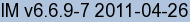
URL: https://legacy.imagemagick.org/Usage/crop/
![[IM Text]](crop_indent.txt.gif)
![[IM Output]](rose_tiles_00.gif)
![[IM Output]](rose_tiles_01.gif)
![[IM Output]](rose_tiles_02.gif) 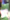
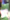
![[IM Output]](rose_tiles_04.gif)
![[IM Output]](rose_tiles_06.gif)
![[IM Output]](rose_tiles_09.gif) 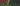
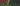
![[IM Output]](rose_tiles_11.gif)
![[IM Output]](rose_rejoined.gif)
![[IM Output]](rose_tile_1_1.gif)
![[IM Output]](rose_tile_2_1.gif)
![[IM Output]](rose_tile_3_1.gif)
![[IM Output]](rose_tile_4_1.gif)
![[IM Output]](rose_tile_1_2.gif)
![[IM Output]](rose_tile_2_2.gif) 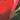
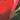
![[IM Output]](rose_tile_4_2.gif)
![[IM Output]](rose_tile_1_3.gif)
![[IM Output]](rose_tile_2_3.gif)
![[IM Output]](rose_tile_3_3.gif)
![[IM Output]](rose_tile_4_3.gif)
![[IM Output]](rose_ctiles_0.gif)
![[IM Output]](rose_ctiles_1.gif)
![[IM Output]](rose_ctiles_2.gif) 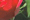
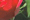
![[IM Output]](rose_ctiles2_2.gif)
![[IM Output]](montage.gif)
![[IM Output]](montage_0.gif)
![[IM Output]](montage_1.gif)
![[IM Output]](montage-3_0.gif)
![[IM Output]](montage-3_1.gif)
![[IM Output]](montage-3_2.gif)
![[IM Output]](montage-3_4.gif)
![[IM Output]](edged.gif)
![[IM Output]](edged-6_0.gif)
![[IM Output]](edged-6_1.gif)
![[IM Output]](edged-6_2.gif)
![[IM Output]](edged-6_3.gif)
![[IM Output]](edged-6_4.gif)
![[IM Output]](edged+6_0.gif)
![[IM Output]](tile-shave.gif)
![[IM Text]](crop_miss_ident.txt.gif)
![[IM Text]](tiles_layered_ident.txt.gif)
![[IM Output]](rose_30x20_00.gif)
![[IM Output]](rose_30x20_01.gif)
![[IM Output]](rose_30x20_02.gif)
![[IM Output]](rose_30x20_06.gif)
![[IM Output]](rose_30x20_07.gif)
![[IM Output]](rose_30x20_09.gif)
![[IM Output]](rose_30x20_10.gif)
![[IM Output]](rose_30x20_11.gif)
![[IM Output]](rose_30x20_12.gif)
![[IM Output]](rose_30x20_13.gif)
![[IM Output]](rose_30x20_14.gif)
![[IM Output]](rose_30x20_15.gif)
![[IM Text]](strips_ident.txt.gif)
![[IM Output]](rose_23x15_00.gif)
![[IM Output]](rose_23x15_01.gif)
![[IM Output]](rose_23x15_02.gif)
![[IM Output]](rose_23x15_03.gif)
![[IM Output]](rose_23x15_04.gif)
![[IM Output]](rose_23x15_09.gif)
![[IM Output]](rose_23x15_12.gif)
![[IM Output]](rose_23x15_14.gif)
![[IM Output]](rose_3x3@_0.gif)
![[IM Output]](rose_3x3@_1.gif)
![[IM Output]](rose_3x3@_3.gif)
![[IM Output]](rose_3x3@_4.gif)
![[IM Output]](rose_3x3@_6.gif)
![[IM Output]](rose_3x3@_7.gif)
![[IM Output]](rose_3x3@_8.gif)
![[IM Output]](rose_2x2+20+20@_2.gif)
![[IM Output]](rose_2x2+20+20@_3.gif)
![[IM Output]](edged+6_3.gif)
![[IM Output]](edged+6_4.gif)
![[IM Output]](edged-8_0.gif)
![[IM Output]](edged-8_1.gif)
![[IM Output]](spaced+6_1.gif)
![[IM Output]](spaced+6_2.gif)
![[IM Output]](spaced+6_4.gif)
![[IM Output]](spaced-6_0.gif)
![[IM Output]](spaced-6_1.gif)
![[IM Output]](spaced-6_3.gif)
![[IM Output]](spaced-6_4.gif)
{kind=link}
{kind=link}
{kind=link}
{kind=link}
{kind=link}
{kind=link}
{kind=link}
{kind=link}
{kind=link}
{kind=link}
{kind=link}
{kind=link}
{kind=link}
{kind=link}
{kind=link}
{kind=link}
{kind=link}
{kind=link}
{kind=link}
{kind=link}
{kind=link}
{kind=link}
{kind=link}
{kind=link}
{kind=link}
{kind=link}
{kind=link}
{kind=link}
{kind=link}
{kind=link}
{kind=link}
{kind=link}
{kind=link}
{kind=link}
{kind=link}
{kind=link}
{kind=link}
{kind=link}
{kind=link}
{kind=link}
{kind=link}
{kind=link}
{kind=link}
{kind=link}
{kind=link}
{kind=link}
{kind=link}
{kind=link}
{kind=link}
{kind=link}
{kind=link}
{kind=link}
{kind=link}
{kind=link}
{kind=link}
{kind=link}
{kind=link}
{kind=link}
{kind=link}
{kind=link}
{kind=link}
{kind=link}
{kind=link}
{kind=link}
{kind=link}
{kind=link}
{kind=link}
{kind=link}
{kind=link}
{kind=link}
{kind=link}
{kind=link}
{kind=link}
{kind=link}
{kind=link}
{kind=link}
{kind=link}
{kind=link}
{kind=link}
{kind=link}
{kind=link}
{kind=link}
{kind=link}
{kind=link}